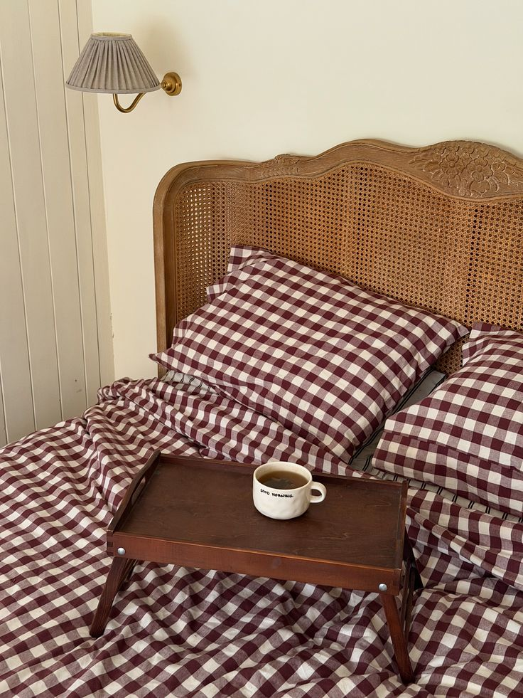
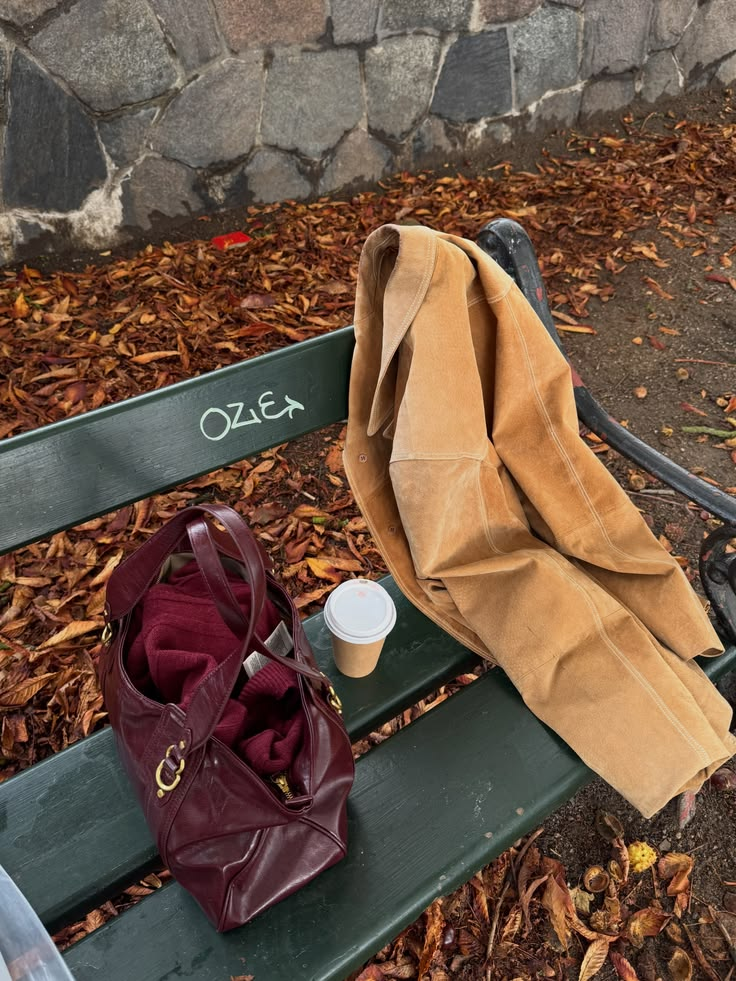
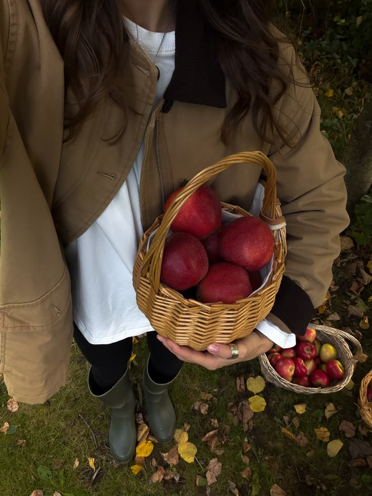
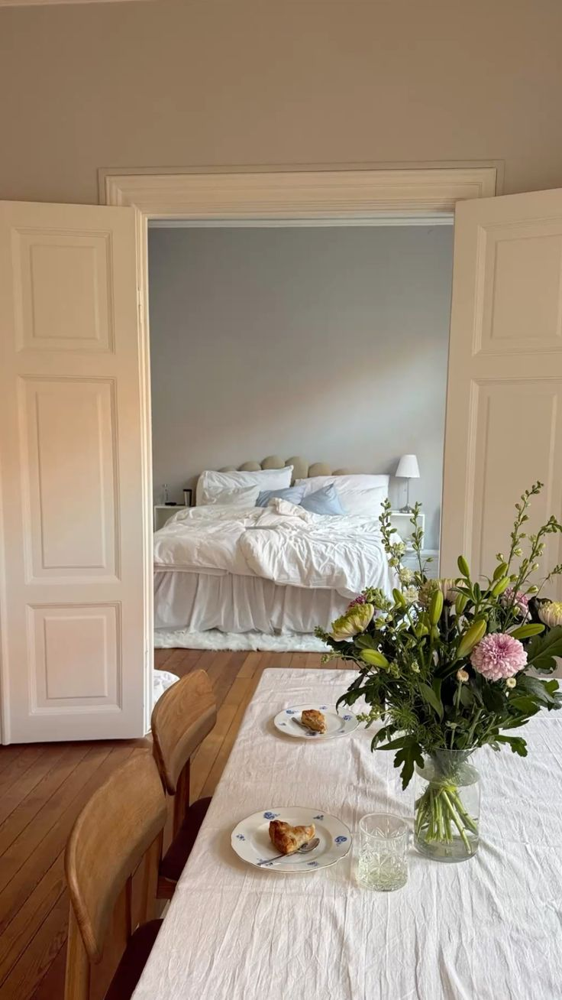
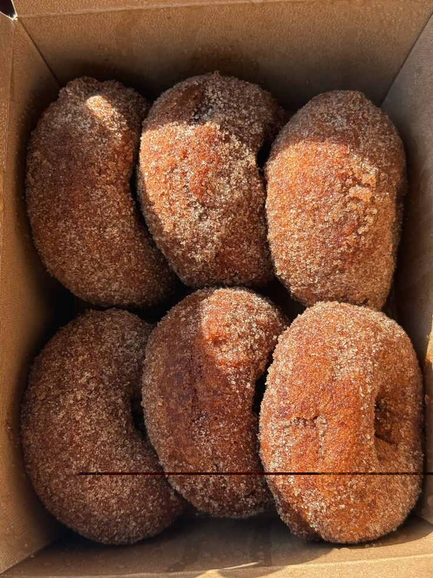
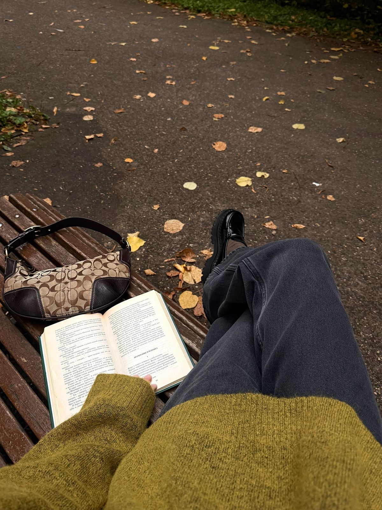
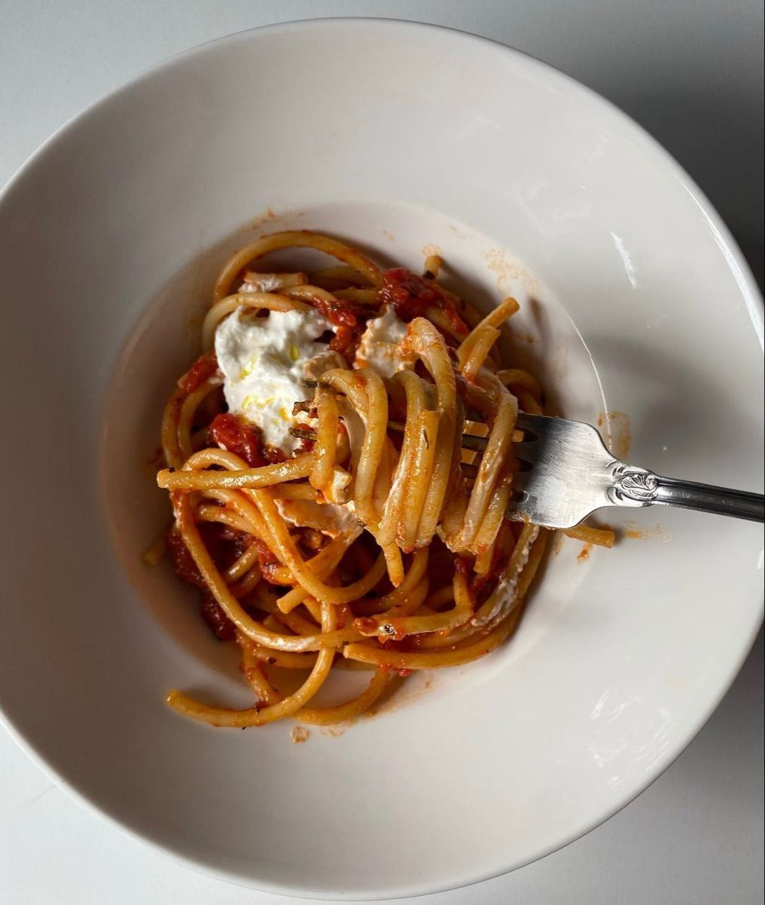

Your progress 0 / 30 done
- All
- Cozy days
- Food & drinks
- Outdoor
- Selfcare
01
Cozy days
Slow, indoor moments
0 / 8 done

02
Food & drinks
Recipes worth the mess
0 / 7 done

03
Outdoor
Fresh air, falling leaves
0 / 8 done

04
Selfcare
Slow down, on purpose
0 / 7 done

ALL DONE?
Save it, print it, share it
Track what you've completed, or print the list for later. A small collection of ways to slow down this season.
DOWNLOAD PRINTABLE LIST SHARE ON INSTAGRAM#theautumnedit


